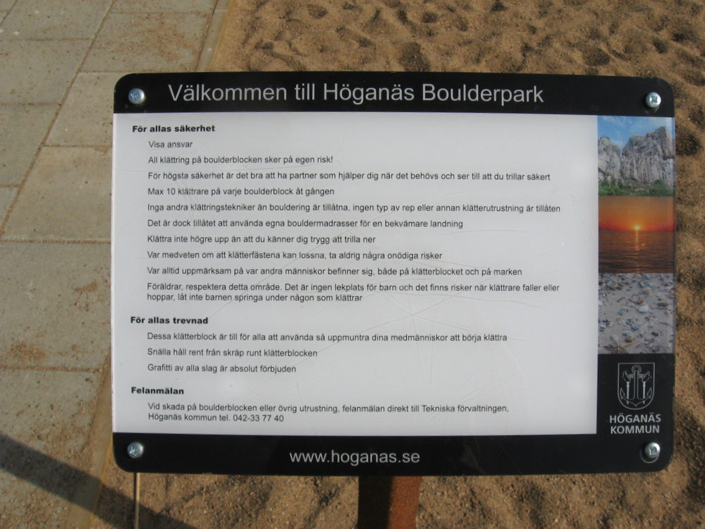
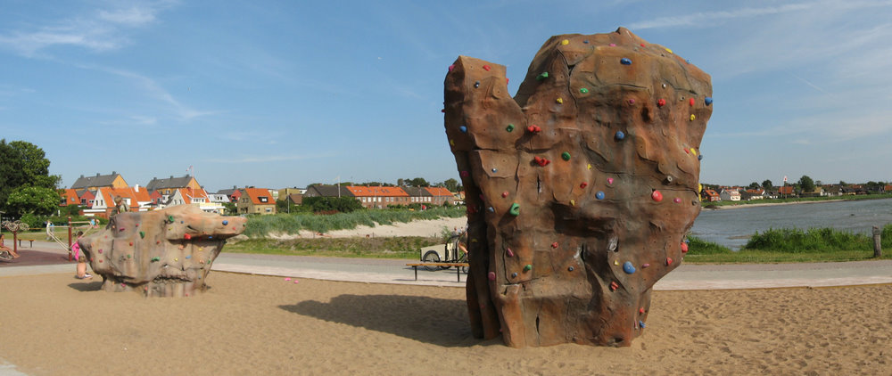
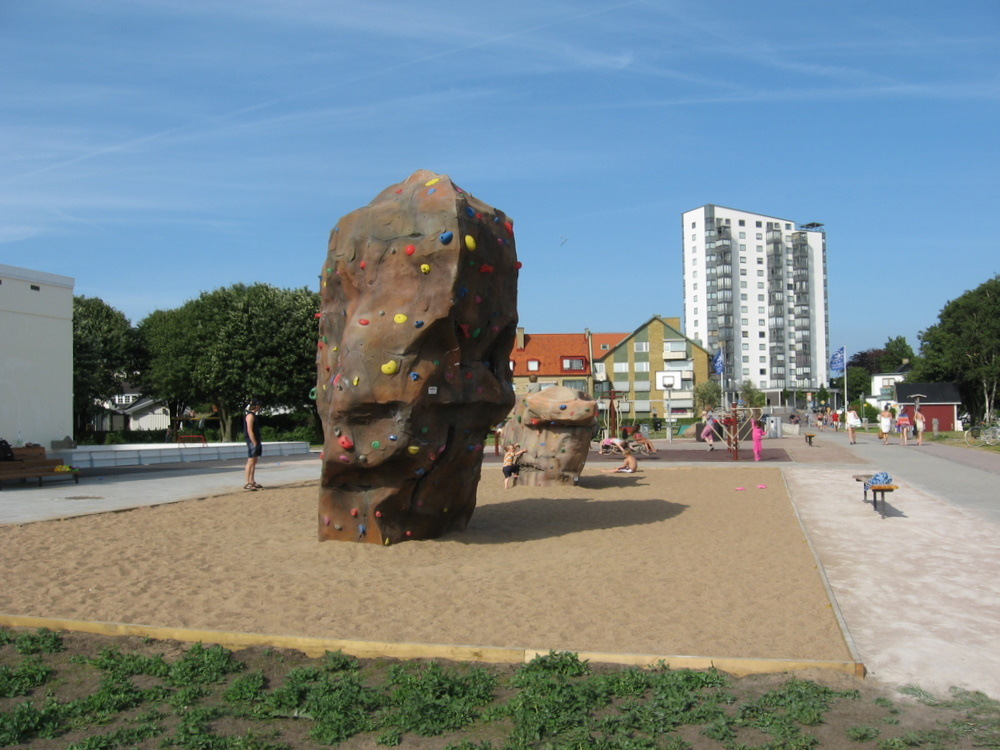
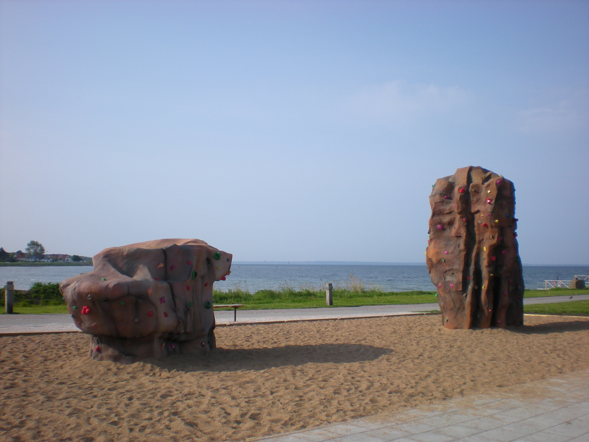

GPS: 56.198543,12.553108
På Kvickbadet i Höganäs finns det två konstgjorda stenar för bouldering.
Adress: Hamnplan, Höganäs. Vid Kvickbadet och småbåtshamnen.
Foto: Ola
Foto: Ola
Foto: Ola
Foto: Höganäs Turistbyrå. Används med tillstånd.
kategori:Saknar skiss
kategori:Saknar vägbeskrivning
kategori:Saknar leder
kategori:Saknar koordinater
kategori:Saknar skrivarformatering
Category:Skåne
Copyright (C) Permission is granted to copy, distribute and/or modify this document under the terms of the GNU Free Documentation License, Version 1.3